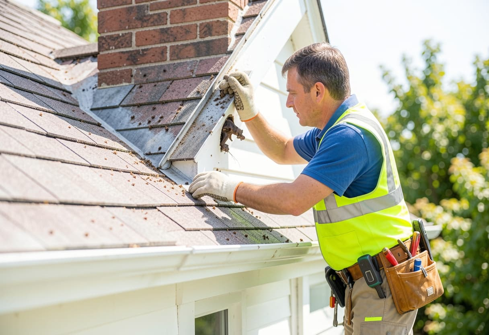
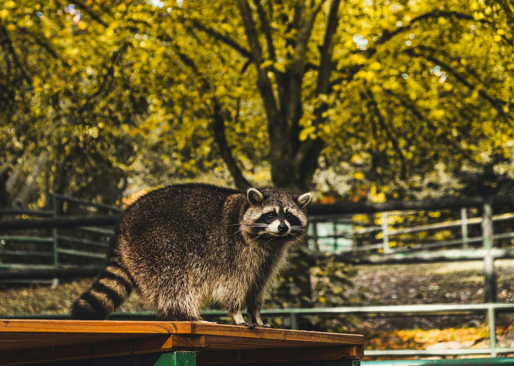
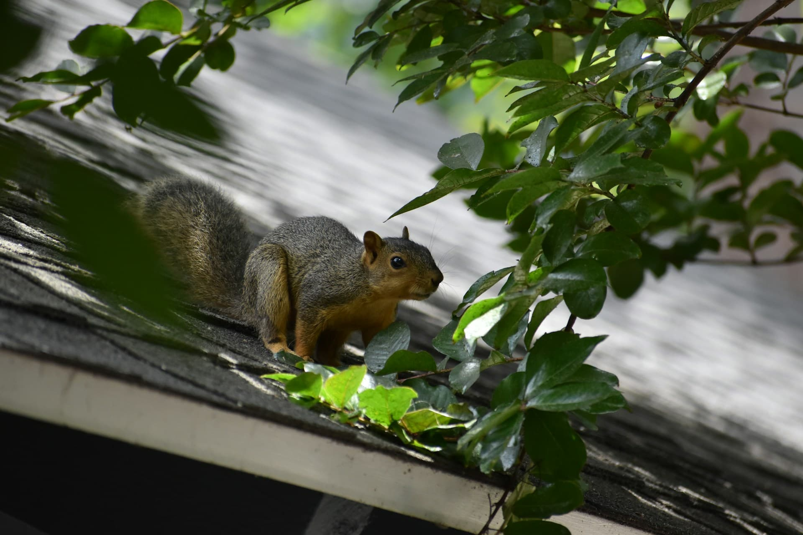
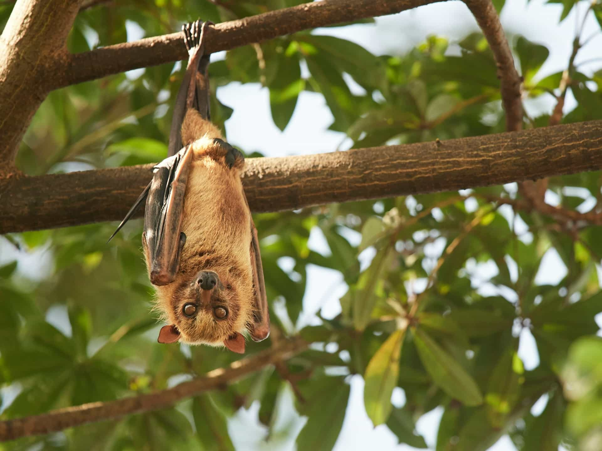
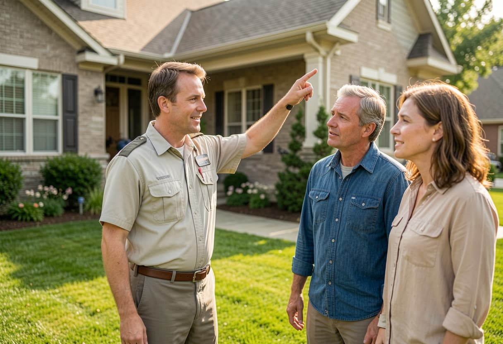

Animal identification
Different species leave different signs. Scratching, droppings, torn soffits, chewed wires, and lawn tunnels all point to different service needs.
Family-owned wildlife service connector
Wildlife Control Connect helps homeowners compare local service providers focused on humane animal removal, exclusion work, sanitation, and long-term property protection.

Property-focused wildlife support
Different species leave different signs. Scratching, droppings, torn soffits, chewed wires, and lawn tunnels all point to different service needs.
Effective exclusion methods help reduce repeat wildlife activity around vents, fascia gaps, crawl-space openings, deck voids, and roof returns.
Attic contamination, nesting debris, insulation damage, and odor sources often require separate sanitation and repair discussions.
Homeowners can use one request to connect with local providers familiar with regional species, seasonal patterns, and structural risk areas.
Humane wildlife categories

Attic denning, soffit damage, insulation disruption, and cleanup planning.

Chewing at roof edges, vent caps, gable gaps, and electrical pathways.

Colony entry points, guano concerns, and seasonal exclusion timing.

Deck denning, odor events, turf disruption, and low-clearance access zones.
How it works
Designed for homeowners comparing local options for humane removal, exclusion, and repair planning.
Describe where activity is happening, which sounds or smells are present, and which animal may be involved.
Connect with local providers offering professional animal removal, exclusion work, and property-focused recommendations.
Compare inspection findings, sanitation needs, vulnerable entry points, and seasonal wildlife patterns before choosing a service path.

About the service model
Wildlife Control Connect is positioned as a local family-owned aggregator focused on helping homeowners navigate humane wildlife issues with more clarity. The site centers on property protection, practical information, and referral support instead of inflated claims.
FAQ
No. Yard burrows, crawl-space voids, chimney tops, wall cavities, roof vents, and foundation gaps are all common access points.
Often, yes. Homeowners commonly compare animal removal, sealing work, sanitation, and repair recommendations as separate parts of the project.
Effective exclusion methods are a central part of many bird and bat service discussions, especially around seasonal activity and protected roosting periods.
Start here
Share the animal type, affected area, and clearest signs to compare local service options for humane removal, exclusion work, and property protection.